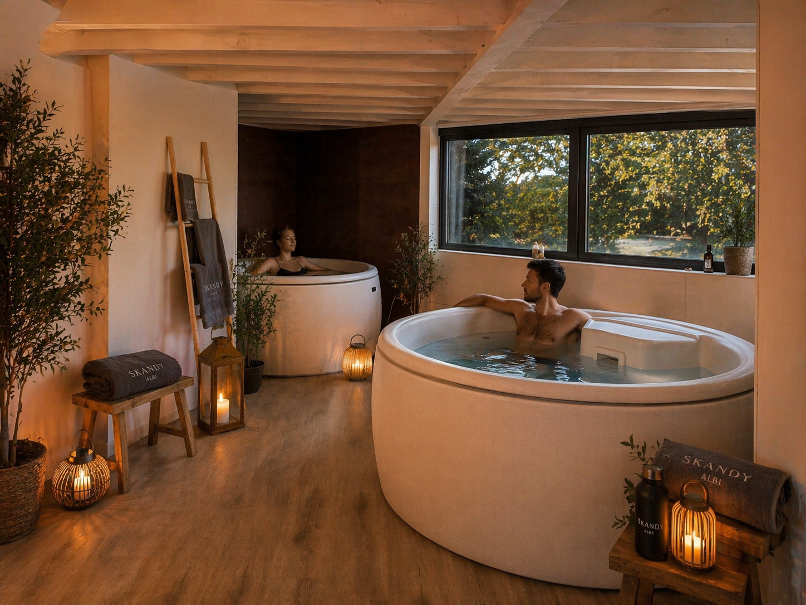

Pour ceux qui font du sport, qui enchaînent les journées intenses, ou qui accumulent les tensions sans jamais vraiment récupérer.
Grâce à l'alternance bain froid et sauna, dans un espace dédié qui ouvre à Albi en septembre 2026.
Inscrivez-vous pour recevoir l'offre de lancement avant tout le monde.
En vous inscrivant, vous acceptez de recevoir des emails de Les Bains Albi.
Désinscription en un clic.
C'est noté.
Vous recevrez l'offre de lancement en avant-première, avant l'ouverture au public.
Moins de courbatures, moins de raideurs au réveil.
L'alternance froid-chaud accélère la récupération après l'effort.
Les athlètes professionnels utilisent ce principe depuis 20 ans pour retrouver leurs jambes plus vite.
Vos tensions musculaires se relâchent sans forcer.
Pas de médicaments, pas de massage.
Le contraste entre le froid et le chaud fait le travail sur vos muscles et vos articulations, séance après séance.
Un stress qui redescend, un sommeil qui revient.
Quand votre corps alterne entre 12°C et 80°C, il apprend à se relâcher vraiment.
Et ça se ressent dès le soir même.

Ils l'ont déjà testé
"J'appréhendais vraiment le premier bain froid.
Mais après ma première immersion, il me tardait d'y retourner.
Pendant deux minutes dans l'eau froide, tu ne penses plus à rien.
En sortant, une sensation de bien-être que je n'arrive toujours pas à expliquer.
Les jours qui ont suivi, j'ai essayé de la retrouver sous des douches froides.
Impossible."
Et venir se détendre en avant-première.
En vous inscrivant, vous acceptez de recevoir des emails de Les Bains Albi.
Désinscription en un clic.
Les bénéfices mentionnés s'appuient sur des méta-analyses et revues systématiques publiées dans des journaux à comité de lecture. Les résultats varient selon les individus et l'intensité de la pratique. Ce service ne remplace pas un avis médical. Consultez un professionnel de santé avant toute immersion en eau froide si vous souffrez de troubles cardiovasculaires, d'hypertension ou d'autres pathologies.